Send Apple Card transactions to Linear
WalletFeed sends your Apple Card, Apple Cash and Savings transactions from your iPhone to Linear. In Linear, WalletFeed makes one issue for each month, or one issue for each transaction. You make a personal API key in Linear, and then you paste the key in WalletFeed.
Before you start
You must have these items:
- An iPhone with iOS 26 or a newer version. WalletFeed is available only in the US.
- WalletFeed, with access to your Wallet accounts.
- WalletFeed Pro, a subscription with a 1-week free trial, or a one-time Lifetime purchase. You must have WalletFeed Pro to send transactions to Linear.
- A Linear account, from Linear's sign-up page. You can use the Free plan of Linear.
Your key stays on your iPhone
- WalletFeed keeps the API key or the sign-in in the Keychain on your iPhone. iOS encrypts the Keychain.
- The API key or the sign-in does not go to iCloud Keychain or to your other devices.
- WalletFeed has no account and no servers. No person at WalletFeed can see or get the API key or the sign-in.
- Your iPhone sends the API key or the sign-in only to Linear, in each request to Linear.
- When you delete the destination, WalletFeed deletes the API key or the sign-in from your iPhone. You can also revoke the key, or remove WalletFeed, in Linear.
Monthly or Each Transaction
In WalletFeed, a Linear destination has two values for Send:
| Send | Linear receives |
|---|---|
| Monthly | One issue for each month, with a table of the transactions of that month. When the month changes, WalletFeed changes the issue. |
| Each Transaction | One issue for each transaction. |
When you add a Linear destination, Send is Monthly until you change it. With Monthly, a year of transactions uses a maximum of 12 issues. With Each Transaction, each transaction uses one issue. A Linear destination from WalletFeed 1.0 keeps Each Transaction. You can change Send after you add the destination (refer to Change Send).
Step 1: Make a personal API key in Linear
With a personal API key, WalletFeed can make issues in your Linear workspace.
-
On your iPhone, open Linear's Security & access settings.
-
If Linear shows Log in to Linear, tap Continue with email.
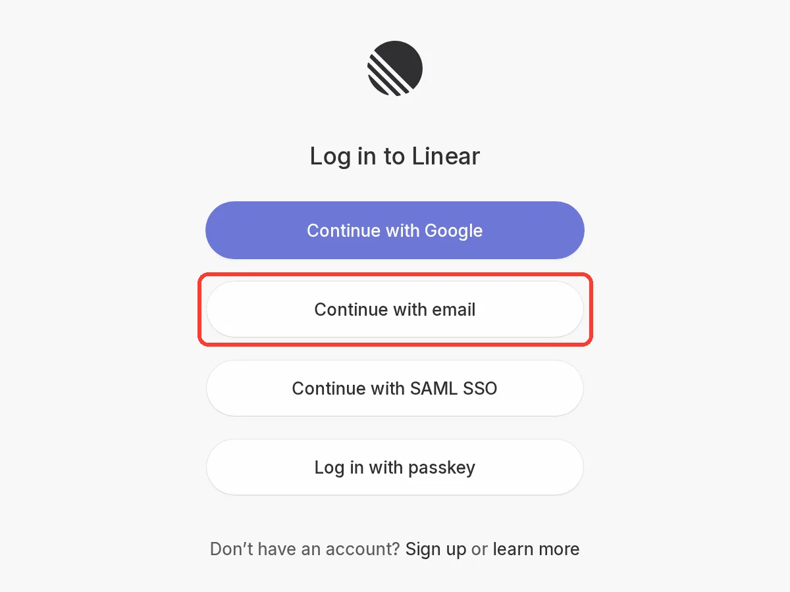
-
Type your e-mail address.
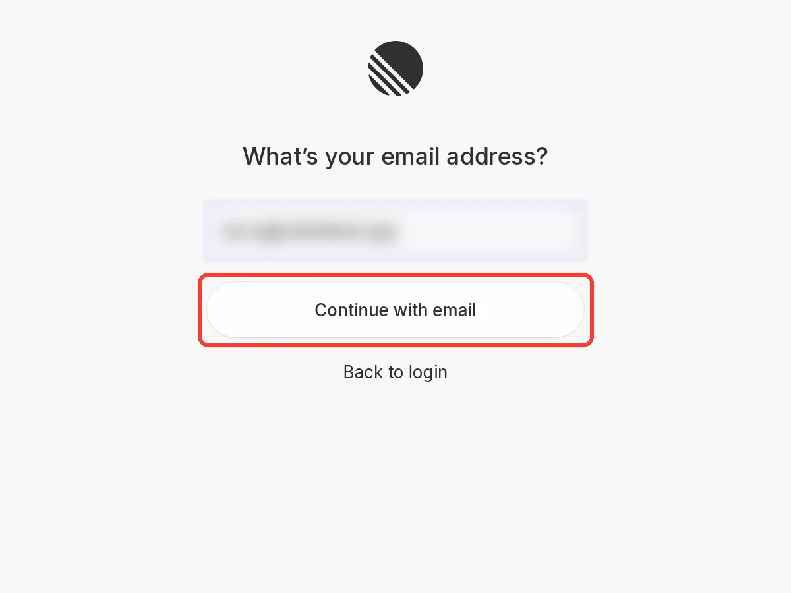
-
Tap Continue with email.
-
If Linear shows Verifying it’s you, tap the Verify you are human checkbox.
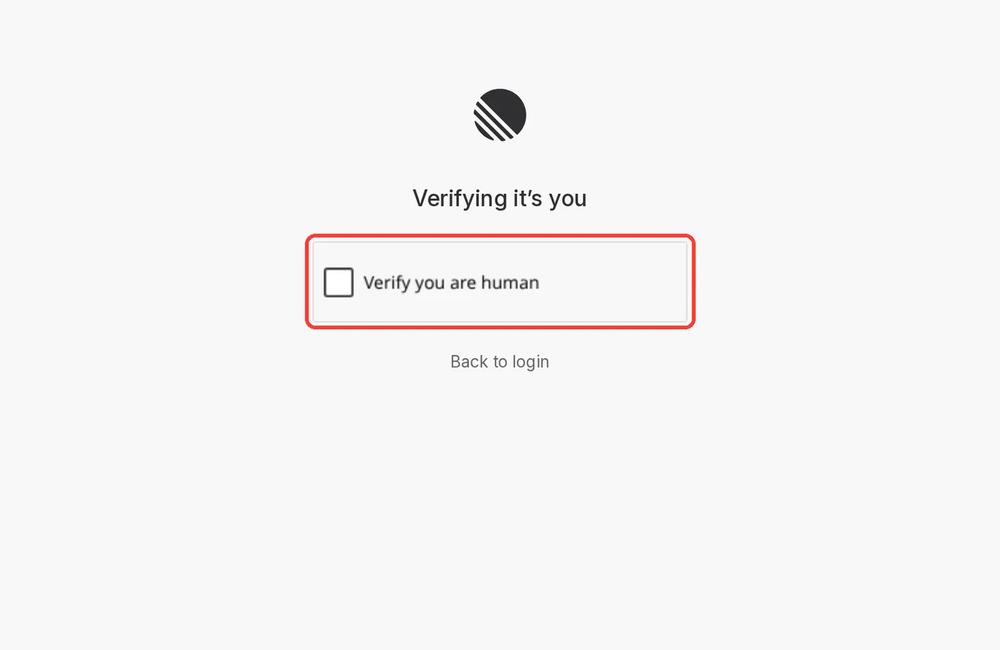
-
On the Check your email page, tap Enter code manually.
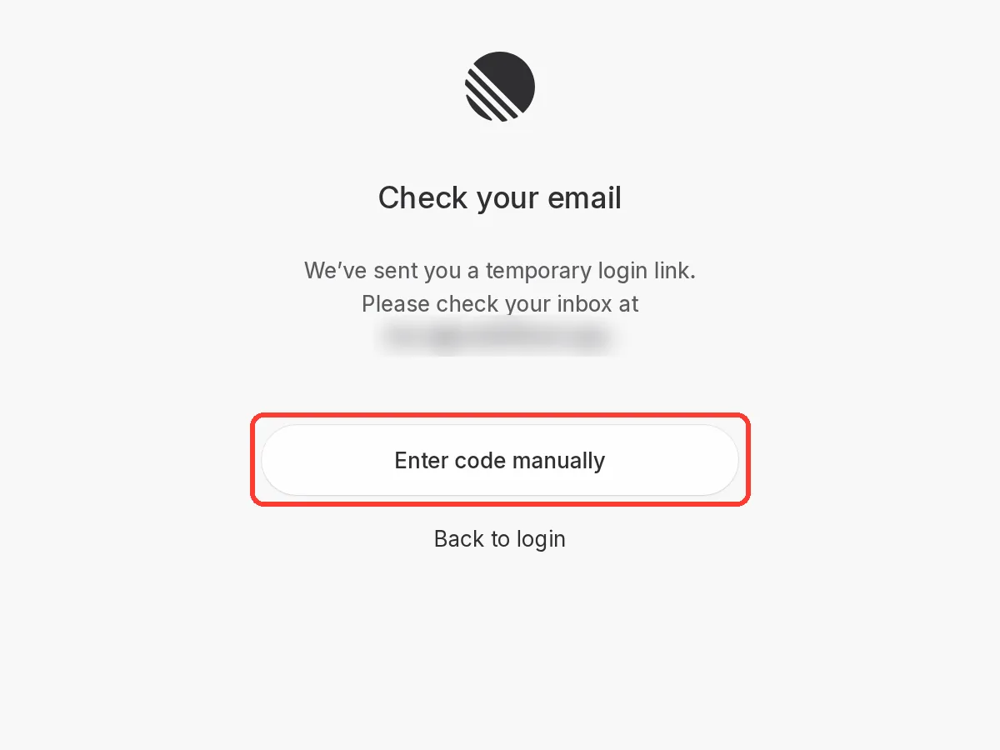
-
Open the e-mail from Linear with the subject “Login for Linear”.
The e-mail has a code of 10 letters and numbers.
-
In Linear, type the code in the field.
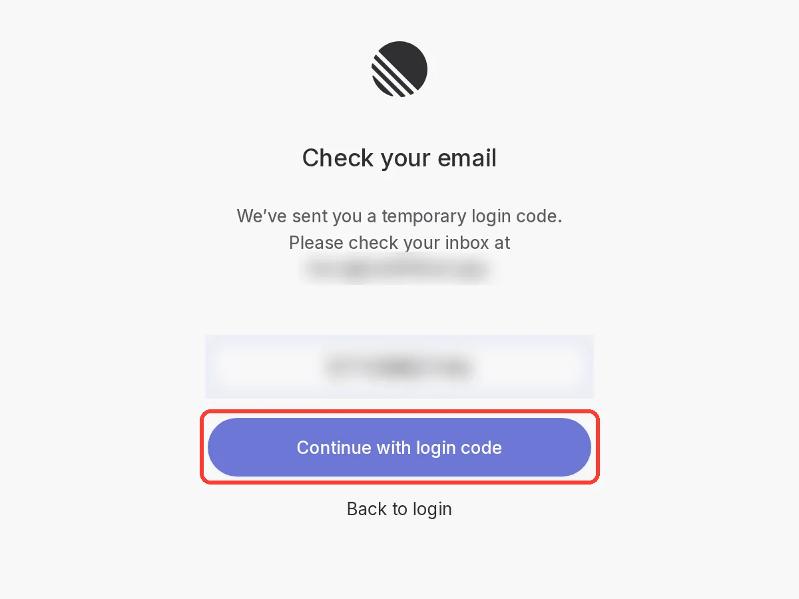
-
Tap Continue with login code.
Result: Linear shows Security & access.
-
If Linear does not show Security & access, open Linear's Security & access settings again.
-
Scroll to Personal API keys, below Sessions and Passkeys.
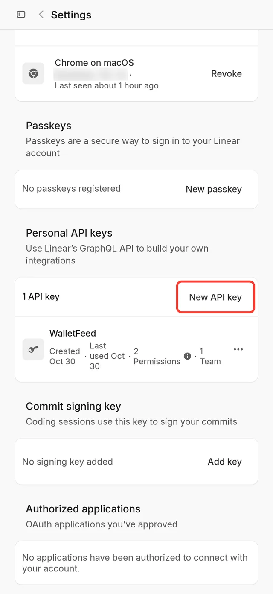
-
Tap New API key.
Result: Linear shows Create API key.
-
In Key name, type
WalletFeed.The name helps you find the WalletFeed key in the list of keys.
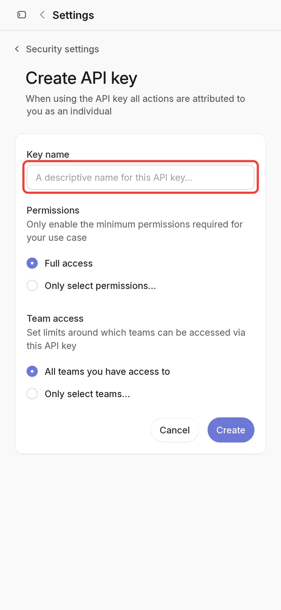
-
In Permissions, tap Only select permissions….
Linear selects Full access when the page opens. WalletFeed can also use a key with Full access, but WalletFeed uses only Read and Write.
-
Select Read and Write. Do not select Admin.
Result: Linear also selects Create and update issues and Create comments.
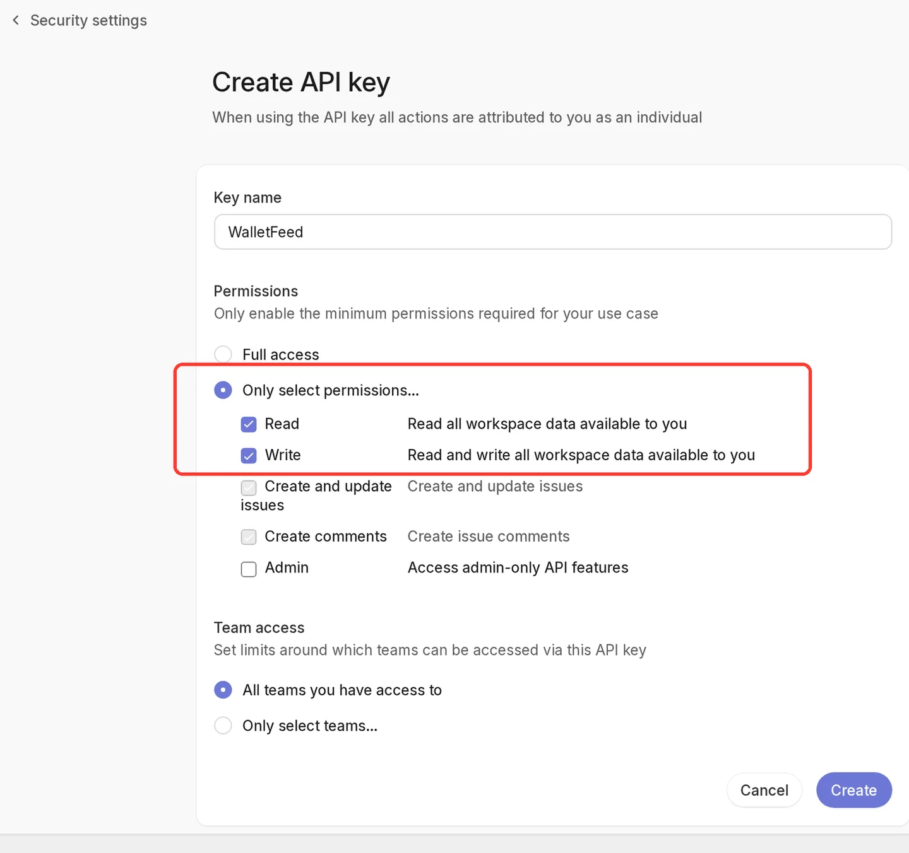
-
Optional: In Team access, tap Only select teams….
Linear selects All teams you have access to when the page opens. With Only select teams…, the key gets access to only the teams that you select.
-
If you tapped Only select teams…, tap Select teams….
-
If Linear shows the list of teams, tap the team that will receive the issues.
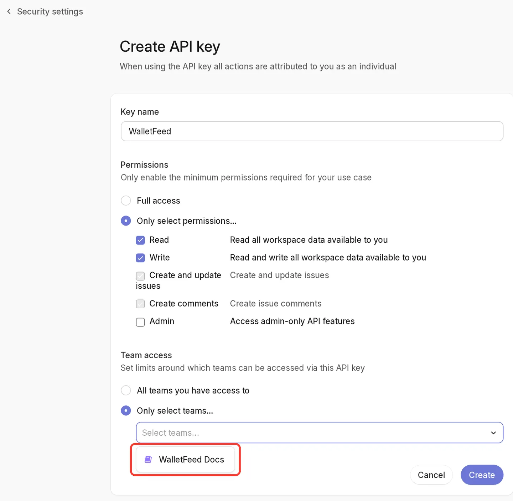
-
Tap Create.
Result: Linear shows the new key below API key, with the text “This API key is shown only once. Please copy it now.” Linear also copies the key.
-
Tap the copy button to the right of the key.
The copy button is an icon with no text. The key starts with
lin_api_.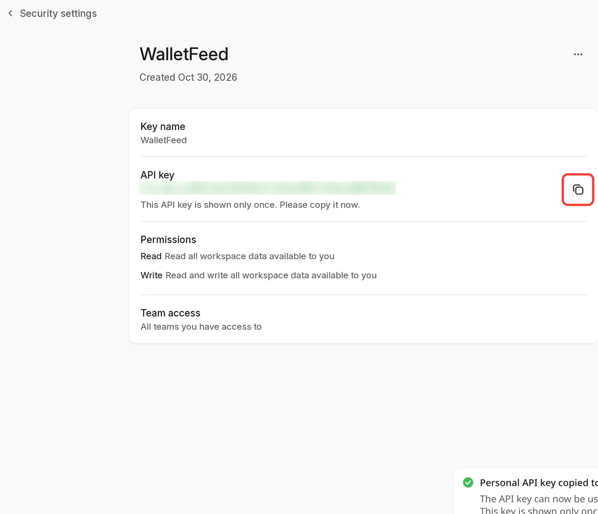
-
Keep the Linear page open until you paste the key in WalletFeed.
Linear shows the key only one time. While the page is open, you can copy the key again.
Step 2: Add Linear in WalletFeed
-
On your iPhone, open WalletFeed.
-
Tap Destinations.
-
Tap + at the top of the screen.

-
In Sheets & Databases, tap Linear. You can also type
Linearin the search field. -
If WalletFeed shows the WalletFeed Pro screen, get WalletFeed Pro on that screen. Then the Linear screen opens.
-
If the Linear screen shows Sign In with Linear, tap Use an API Key Instead.
To use Sign In with Linear, refer to Connect without an API key.
-
Paste the key in the API Key field. WalletFeed keeps the key in the Keychain on your iPhone.
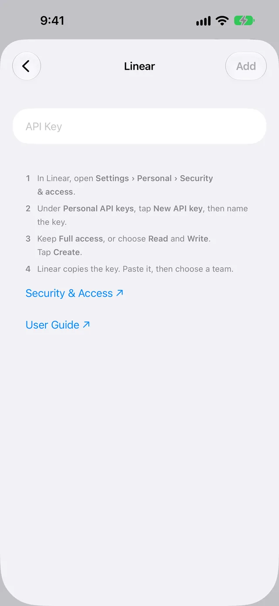
-
After WalletFeed reads the key, select a team in Team. This team receives the issues.
-
Optional: In Project, select a project. If you do not select a project, Project stays at None. A project must be in Linear before WalletFeed can show it.
-
In Send, select Monthly or Each Transaction.
With Monthly, WalletFeed shows “Each month becomes one issue, with a table of its transactions.” With Each Transaction, WalletFeed shows “Each transaction becomes an issue. Add a filter later to send fewer.”
-
Tap Add.
-
Read the message Send Transactions to Linear? The message gives the fields that Linear receives, the accounts and the start date.
With Monthly, the message starts with “Linear receives one issue a month”.
-
Tap Send. If you tap Cancel, WalletFeed does not add the destination.
Then Destinations shows the new destination with the name of the team, for example “Linear · Finance”.
Step 3: Set a filter
With a filter, WalletFeed sends only some transactions to Linear. With Monthly, the issue of each month shows only the transactions that the filter includes. With Each Transaction, set a filter if your workspace is on Linear's Free plan.
-
In Destinations, tap the Linear destination.
-
Set Filter to on.
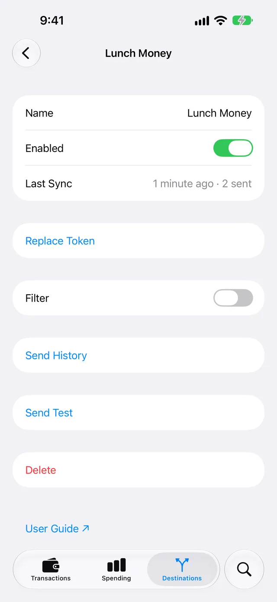
With Each Transaction, Turn On Filter below Send also sets Filter to on.
-
Optional: Set Include to Purchases. Then Linear receives no refunds or payments.
-
Optional: In Minimum, type an amount, for example
25. Then Linear receives only transactions of $25 or more. -
Optional: In Accounts or Categories, select only the accounts or the categories to send to Linear.
-
Optional: To send previous transactions with this filter, tap Send History (refer to Send previous transactions).
Step 4: Find the issues in Linear
-
On a computer, open Linear in a web browser.
-
In the left column, find your team in Your teams.
-
If Linear does not show Issues below the name of your team, click the name of your team.
-
Below the name of your team, click Issues.
-
At the top of the list, click All issues.
Result: If Triage is off, Linear shows the issues from WalletFeed in Backlog.
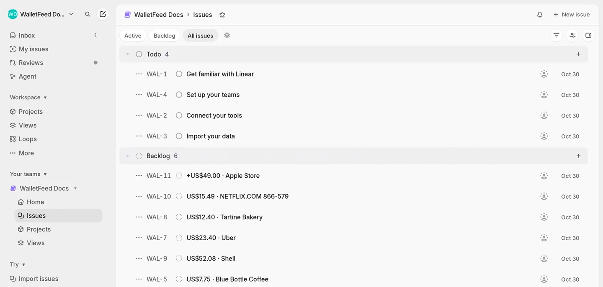
Connect without an API key
If the Linear screen in WalletFeed shows Sign In with Linear, you can connect WalletFeed to Linear without an API key. Below the button, WalletFeed shows “WalletFeed can read and write issues in this workspace.”
-
Open the Linear screen in WalletFeed (refer to steps 1 to 5 of Step 2).
-
Tap Sign In with Linear.
-
If Linear shows Log in to Linear, get access to your Linear account (refer to steps 2 to 9 of Step 1).
-
On the Linear page, select the workspace that will receive the issues.
-
Give WalletFeed access to the workspace.
Below Sign In with Linear, WalletFeed shows “In some workspaces, an admin must approve WalletFeed first.”
-
After WalletFeed shows Signed In, select a team in Team.
-
Do steps 9 to 13 of Step 2.
To connect a different workspace before you tap Add, tap Use Another Workspace. To use an API key, tap Use an API Key Instead. On the API key form, Sign In with Linear Instead shows the sign-in again.
Data that Linear receives
Your transactions go from your iPhone directly to Linear. WalletFeed has no account and no WalletFeed servers. After Linear receives your transactions, the terms of Linear are applicable to them.
WalletFeed puts each issue in the team that you selected. If you selected a project, WalletFeed also puts the issue in that project. If Triage is on for the team, a new issue goes to Triage. If Triage is off, the issue goes to the first Backlog status of the team.
Issues with Monthly
The first transaction of a month makes the issue of that month. The title of the issue has the Wallet account and the month, for example Apple Card transactions, October 2026. If the month has transactions from more than one account, the title has all the account names.
The description of the issue starts with the number of transactions and the total amount, for example 42 transactions · Total $1,234.56. If the month has transactions in more than one currency, the description shows a total for each currency.
Below the total, a table shows the transactions of the month, with the newest transaction first:
| Column in the table | Value from Wallet |
|---|---|
| Date | The date of the transaction, for example 2026-10-29 |
| Merchant | The merchant name, or the description if Wallet has no merchant name. A pending charge has · Pending after the name. |
| Amount | A charge has no sign, for example $6.75. A refund or a payment has + before the amount, for example +$25.00. |
| Category | The WalletFeed category, for example Groceries |
| Account | The Wallet account, for example Apple Card. This column is in the table only if the month has transactions from more than one account. |
The last line of the description starts with WalletFeed ID:. WalletFeed uses this line and the WalletFeed item in the Resources section to find the issue of the month again.
If a month has more than approximately 400 transactions, the table shows only the newest transactions. Then the description shows a note, for example “Showing the newest 412 of 530 transactions. The count and total include all of them.”
Issues with Each Transaction
The title of each issue has the amount and the merchant, for example $6.75 · Blue Bottle Coffee. The description of the issue is a table with these rows:
| Row in the description | Value from Wallet |
|---|---|
| Date | The date of the transaction, for example 2026-10-29 |
| Merchant | The merchant name, or the description if Wallet has no merchant name |
| Amount | Less than zero for a charge, for example -84.12, and more than zero for a refund or a payment |
| Currency | The currency code, for example USD |
| Category | The WalletFeed category, for example Groceries |
| Status | The Wallet status, for example pending, or booked after the charge posts |
| Pending | Yes or No |
| Account | The Wallet account, for example Apple Card |
| Description | The description from Wallet |
| Type | The type of transaction, for example pointOfSale or refund |
| MCC | The merchant category code, for example 5411 |
| Foreign Amount and Foreign Currency | The amount and the currency of a charge in a different currency |
| WalletFeed ID | The transaction ID, in the last row |
WalletFeed does not write a row that has no value. In the description, an amount has no zeros at the end, for example -23.4 for $23.40.
Each issue also has an item with the name WalletFeed in its Resources section. WalletFeed uses this item and the WalletFeed ID row to find the issue again in the team that you selected.
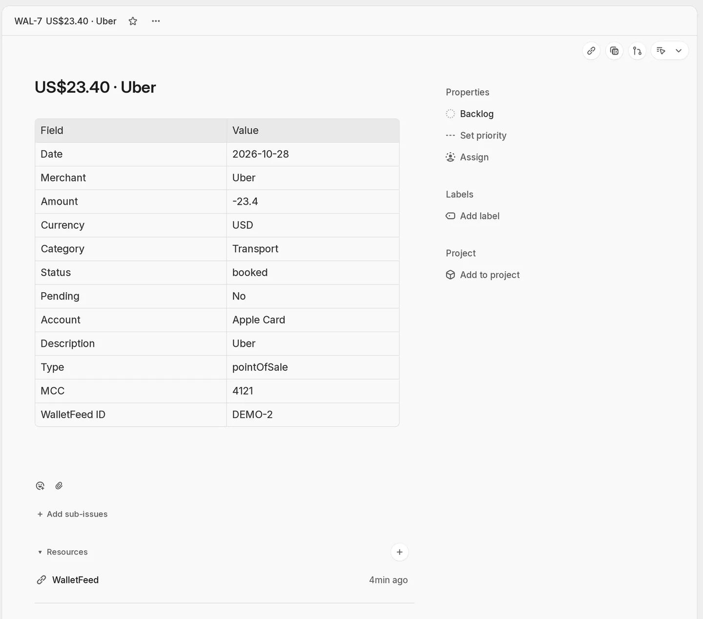
New and changed transactions
While WalletFeed is open, Linear receives changes in seconds. When WalletFeed is not open, iOS starts WalletFeed approximately 1 hour or less after a change in Wallet. If Background Sync is on in Settings › Sync, WalletFeed then sends the change.
Background Sync is in Settings › Sync. It stays on until you set it to off. After your iPhone starts again, WalletFeed sends nothing to Linear until you type your iPhone passcode one time.
Changes with Monthly
When a transaction of a month changes, WalletFeed writes the title and the description of the issue for that month again. WalletFeed does not wait for the end of the month. Each change to a month uses 2 to 4 requests to Linear.
- A new transaction gets a row in the table.
- When a pending charge posts, its row shows the posted amount, without
· Pending. - If a pending charge becomes a declined charge, or if Wallet removes a transaction, WalletFeed removes its row.
If a month has no transactions after a change, the issue stays in Linear. Then the description shows “No transactions.”
Changes with Each Transaction
WalletFeed sends a maximum of 25 changes together, in 5 requests to Linear or less.
A pending charge becomes an issue with · Pending at the end of the title. When the charge posts, WalletFeed changes the title and the description of the same issue.
A refund and its charge become two different issues. The title of a refund or a payment has + before the amount, for example +$49.00 · Apple Store.
If a pending charge becomes a declined charge, or if Wallet removes a transaction, WalletFeed archives the issue. The archived issue stays in Linear.
Changes that you make in Linear
When a transaction or a month changes, WalletFeed writes the title and the description of its issue again. If you changed them in Linear, WalletFeed replaces your changes. WalletFeed does not change the status or the assignee of the issue.
Send previous transactions
A new Linear destination also receives previous transactions from the start date in Settings › Sync › Initial History. Initial History is All until you change it.
With Monthly, a new destination receives all the months from the start date. WalletFeed starts at the first day of the month of the start date. Thus, the first issue has all the transactions of its month. For example, with All, 3 years of transactions make 36 issues.
With Each Transaction, a new Linear destination receives a maximum of 30 days of previous transactions.
To send transactions from a longer period, use Send History:
-
In Destinations, tap the Linear destination.
-
If Send is Each Transaction and your workspace is on Linear's Free plan, set a filter (refer to Step 3).
-
Tap Send History.
-
Select a period: 30 Days, 90 Days, 1 Year or All.
With Monthly, the period starts on the first day of its month.
-
Read the message Send History to Linear?
With Monthly, the message shows “Each month becomes one issue.” With Each Transaction, the message shows “Each transaction can become an issue.”
-
Tap Send.
WalletFeed sends the newest transactions first. With Each Transaction, WalletFeed sends 20 transactions, and then it stops for 2 minutes. With Monthly, WalletFeed sends one month, and then it stops for 2 minutes. The destination screen shows the number of transactions that WalletFeed sent. Send History also uses the filter.
If Linear has the issue of a transaction or a month, Send History changes that issue. It does not make a second issue.
To stop Send History:
- On the destination screen, tap Send History.
- Tap Stop Sending. The issues that WalletFeed sent stay in Linear.
Change or remove the destination
Change Send
-
In Destinations, tap the Linear destination.
-
In Send, select Monthly or Each Transaction.
-
Optional: If you selected Each Transaction and the destination has no filter, tap Turn On Filter below Send.
Result: WalletFeed shows the settings of the filter below Send (refer to Step 3).
After you change Send to Monthly, the issue of each month shows all the transactions of that month. These include the transactions that have an issue of their own.
After you change Send to Each Transaction, each new transaction becomes an issue. The issues of the months stay in Linear, and WalletFeed does not change them.
Send only some transactions
To change the transactions that go to Linear, change the filter on the destination screen (refer to Step 3).
Use a different team or project
The destination screen shows the Team, and the Project if you selected a project. You cannot change them. To use a different team or a different project:
- Add Linear again with the new team or the new project (refer to Step 2).
- Delete the previous Linear destination (refer to Remove Linear from WalletFeed).
With Monthly, the new destination makes new issues for the months.
Stop the destination for a time
- In Destinations, tap the Linear destination.
- Set Enabled to off.
To start the destination again, set Enabled to on.
Replace the key
You can replace the key, for example after you revoke the key in Linear.
- In Linear, make a new personal API key (refer to Step 1).
- In WalletFeed, tap the Linear destination in Destinations.
- Tap Replace Key.
- Paste the new key in the API Key field.
- Tap Replace. Before WalletFeed keeps the new key, it makes sure that the key can get access to the team.
Replace the sign-in
If you used Sign In with Linear, the destination screen shows Sign In Again below Team.
- In WalletFeed, tap the Linear destination in Destinations.
- Tap Sign In Again.
- On the Linear page, select the workspace of the destination.
- Give WalletFeed access to the workspace.
Before WalletFeed keeps the new sign-in, it makes sure that the workspace has the team of the destination.
Remove Linear from WalletFeed
- In WalletFeed, tap the Linear destination in Destinations.
- Tap Delete.
- In the message, tap Delete. The issues that WalletFeed sent stay in Linear.
- Optional: Revoke the key in Linear (refer to Revoke the key in Linear).
If you used Sign In with Linear, Linear shows WalletFeed in Authorized applications on the Security & access page. You can remove WalletFeed from that list in Linear.
Revoke the key in Linear
After you revoke the key, WalletFeed cannot connect to Linear with it.
-
On your iPhone, open Linear's Security & access settings.
-
Scroll to Personal API keys.
-
In the row of the WalletFeed key, tap ….
If two keys have the name WalletFeed, the text “Created” in each row gives the date of the key.
-
Tap Revoke API key.
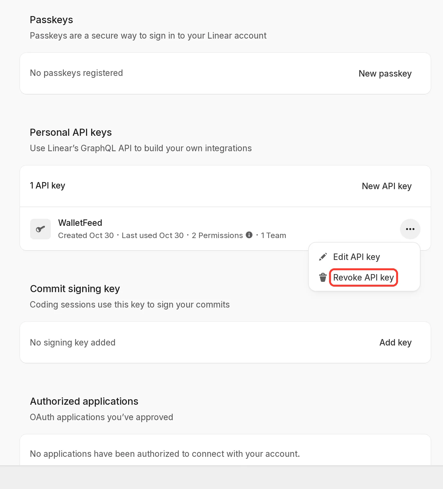
-
In the message Revoke "WalletFeed"?, tap Revoke.
Result: Linear shows "WalletFeed" key revoked.
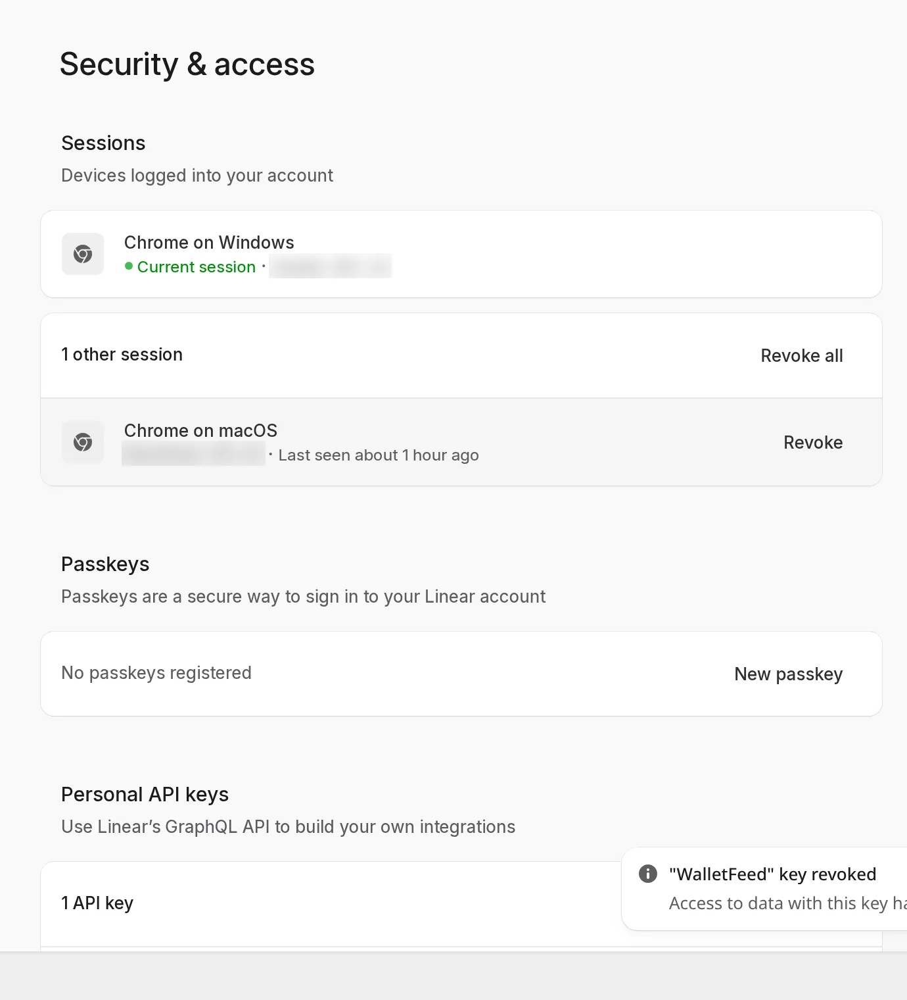
If there is a problem
First, tap Send Test on the destination screen. WalletFeed then sends a sample transaction to a separate issue. With Each Transaction, the title of the sample issue is $4.20 · WalletFeed · Pending. If you tap Send Test again, WalletFeed changes the same issue.
If WalletFeed shows “Key rejected”
Linear did not accept the key because the key is not correct, or because a person revoked the key in Linear.
- In Linear, make a new personal API key (refer to Step 1).
- If WalletFeed shows the message on the Linear screen, paste the new key in the API Key field.
- If WalletFeed shows the message on the destination screen, replace the key (refer to Replace the key).
If the destination shows “Authentication failed”
Linear did not accept the key or the sign-in, or the key cannot make or change issues in the team.
- If the destination shows “Authentication failed. Sign in again.”, replace the sign-in (refer to Replace the sign-in).
- If the destination shows “Authentication failed. Replace the key.”, make a new personal API key in Linear with Full access, or with Read and Write.
- In WalletFeed, tap the Linear destination in Destinations.
- Tap Replace Key.
- Paste the new key in the API Key field.
- Tap Replace.
If WalletFeed shows “Linear rejected the sign-in” or “Linear refused access”
Linear did not accept the sign-in, or Linear did not let WalletFeed get access to the workspace.
- If WalletFeed shows the message on the Linear screen, tap Sign In with Linear again.
- If WalletFeed shows the message on the destination screen, tap Sign In Again (refer to Replace the sign-in).
- If an admin manages the apps of your workspace, tell the admin to give WalletFeed access.
If WalletFeed shows “This workspace doesn't have the team”
After Sign In Again, you selected a workspace that does not have the team of the destination. WalletFeed keeps the sign-in from before.
- Tap Sign In Again.
- On the Linear page, select the workspace that has the team.
If the destination shows “Signed out”
Linear stopped the sign-in. The destination shows “Signed out. Open the destination and tap Sign In Again.”
- In WalletFeed, tap the Linear destination in Destinations.
- Tap Sign In Again (refer to Replace the sign-in).
If WalletFeed shows “Give the key Read and Write access to the team”
Linear does not let the key get access to the team.
- In Linear, make a new personal API key with Full access, or with Read and Write.
- If you tap Only select teams…, select the team that you use with WalletFeed.
- If WalletFeed shows the message on the Linear screen, paste the new key in the API Key field.
- If WalletFeed shows the message on the destination screen, replace the key (refer to Replace the key).
If WalletFeed shows “This key can't see any teams”
The key has access to no team in Linear. With Sign In with Linear, WalletFeed shows “This workspace has no teams you can see.”
- In Linear, make a new personal API key with access to your team.
- On the Linear screen in WalletFeed, paste the new key in the API Key field.
If WalletFeed shows “Linear is limiting requests”
Linear has a limit for each user in each hour, and your account is at that limit. If the destination shows “Too many requests”, WalletFeed keeps the changes and sends them again subsequently.
- Wait for 1 minute.
- If WalletFeed shows the message on the Linear screen, tap Try Again.
- If WalletFeed shows the message on the destination screen, replace the key again (refer to Replace the key).
If the destination shows “Linear workspace full at 250 issues. Set Send to Monthly, or turn on a filter.”
With Each Transaction, Linear does not accept more issues, because the workspace is on the Free plan and has 250 issues. The limit includes the issues of all the teams in the workspace. WalletFeed keeps the changes. When the workspace has fewer than 250 issues, WalletFeed sends each change one time.
- To decrease the number of issues in the limit, archive the issues that you do not use. For example, archive the 4 issues that Linear puts in a new workspace.
- To make fewer issues, set Send to Monthly (refer to Change Send).
- To send only some transactions, set a filter (refer to Step 3).
- To send all your transactions, change your workspace to a different Linear plan, for example Basic. Basic has no limit on issues.
If the destination shows “Linear workspace full at 250 issues. Upgrade its plan to add issues.”
With Monthly, Linear did not accept the issue of a new month, because the workspace is on the Free plan and has 250 issues. The limit includes the issues of all the teams in the workspace. WalletFeed continues to change the issues of the months that Linear has.
- To decrease the number of issues in the limit, archive the issues that you do not use.
- To send all the months, change your workspace to a different Linear plan, for example Basic.
When the workspace has fewer than 250 issues, WalletFeed sends the issue of the new month.
If one transaction has two issues
WalletFeed finds the issue of a transaction by the WalletFeed item in Resources. If the issue has no WalletFeed item, WalletFeed finds the issue only by the full ID in the WalletFeed ID row. If a person removes the item and changes the row, WalletFeed makes a new issue. If a person moves the issue to a different team, WalletFeed also makes a new issue.
- In Linear, archive or delete the issue that has no WalletFeed ID row, or the issue in the different team. WalletFeed continues to change the other issue.
- Keep the WalletFeed ID row and the WalletFeed item in Resources in each issue.
If one month has two issues
Each Linear destination has its own issue for each month. If you delete the destination and add it again, the new destination makes new issues for the months. WalletFeed does not change the issues of the deleted destination.
- In Linear, archive the issues of the deleted destination.
- Do not change the
WalletFeed ID:line of the other issues.
If Linear receives changes only when WalletFeed is open
Background Sync is off, or your iPhone started again and you did not type its passcode.
- In WalletFeed, tap Settings (the gear button) at the top of the screen.
- In the Sync section, set Background Sync to on.
- Tap Done.
- After your iPhone starts again, type its passcode one time.
If Linear does not let you make an API key
An admin of your Linear workspace does not let members make API keys. Admins can always make API keys. On the Free plan, all users are admins.
-
Tell an admin of the workspace to set API key creation to All members. API key creation is in Settings › Administration › API.
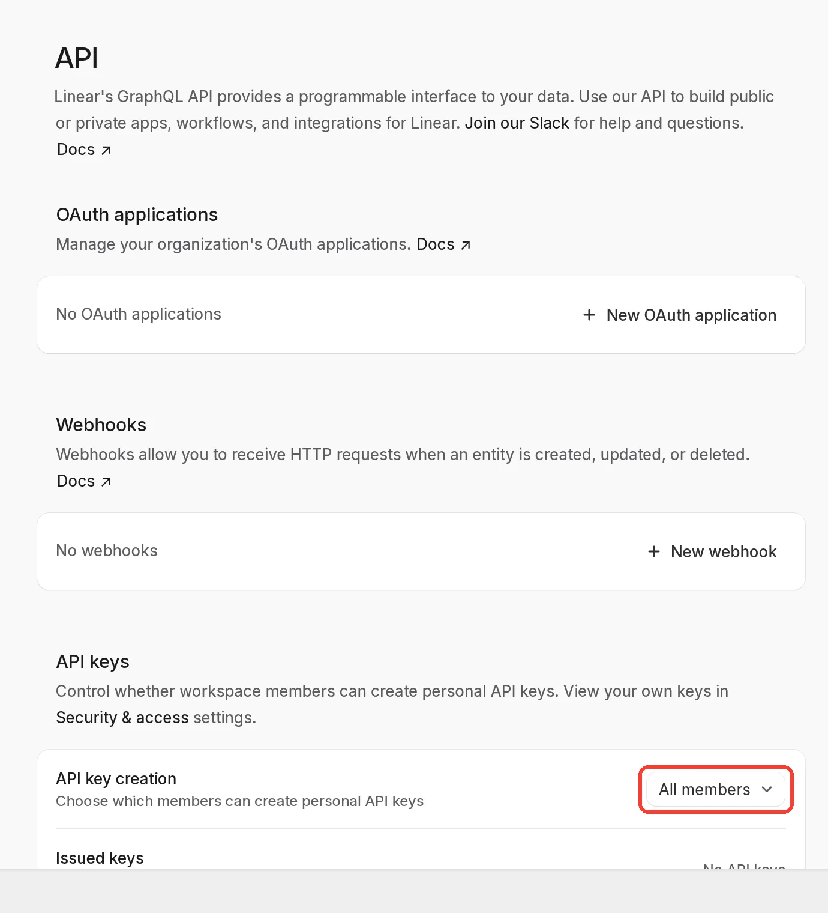
-
After the admin changes API key creation, make the key (refer to Step 1).
Related
Updated October 30, 2026